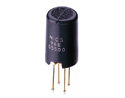
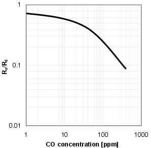
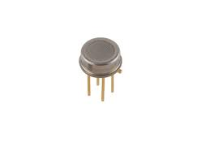
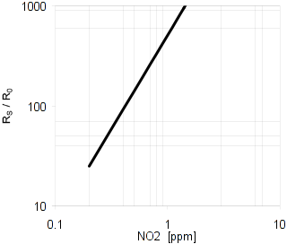
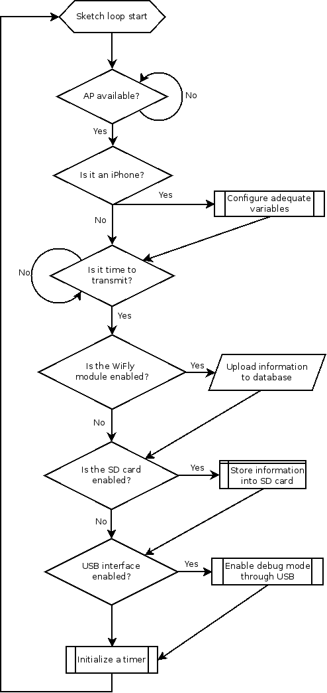

Now all the pieces that the SCK consists of will be described. Along each product a link will be attached which redirects to their datasheet.
The core board utilises a crystal oscillator that acts as a 16MHz real time clock. It needs an external power source to ensure it is always working and that is why you need to place a button cell in the bottom part of the core board.
As for the central processing unit the SCK uses an AVR chip from Atmel, as the Arduino Leonardo does. This is a low power, high performance 8-bit microcontroller, which at the same time has USB built-in capabilities, allowing operating systems to recognise it as a regular mouse.
Any solar panel can be soldered to the board while it matches at least our minimum requirements, that is: - 7V - 500mA
The battery we provide with the kit is powerful enough to power the SCK for a few consecutive days. However, if USB charging wants to be avoided a solar panel should be attached to the board.
Keep in mind that some tasks are more energy comsuming than others. For instance, writing information to the microSD card consumes less energy than directly uploading real-time information to the Internet.
Also, other parameters can be tuned by manually modifying the firmware in order to obtain more battery life. For instance, you can change the value of transmit global variable so communication with the remote database takes place less often (thus saving energy).
Through the USB interface you can either charge the battery, see the output of debug mode or configure the board through our Processing application.
This module enables a device to communicate using the standard IEEE 802.11 (Wi-Fi) b/g versions. It is Arduino friendly and the libraries can be found on GitHub, originally released by Sparkfun. The libraries that the SCK uses are not the original ones. They are a lightweight modified version, specially built for the sake of this project.
TBD.
When an Internet connection is not available, data is timestamped and saved in the microSD card, which allows to later upload all the gathered information.
This shield measures, as its name indicates, environmental factors. More precisely: temperature, humidity, CO, NO2, light and noise.
This two measurements are obtained thanks to the DHT22 sensor, manufactured by Aosong Electronics, a Chinese corporation. They are quite cheap (you can obtain it for around $12USD) and are very precise. The output is not in analogic form but in digital form, meaning that the signal is in the either ones or zeros, thus requiring some extra "intelligence" to interpret the results.
The necessary libraries are already implemented to use along with Arduino and can be found in GitHub. They were initially developed by Ben Adams in 2011 and implements a non-standard single wire protocol, necessary to establish a successful connection between Arduino and the sensor.
As for the values range it can obtain: - 0-100% humidity readings with 2-5% accuracy - -40 to 80°C temperature readings ±0.5°C accuracy

Carbon monoxide levels are measured through the MiCS 5525 sensor, a sensor made by e2v. This time the output is not digital but analogic. That means the sensing resistance decreases when CO is around. The main structure of this sensor consists on a heating resistor and the previously mentioned sensing layer.
CO levels are inversely proportional to Rs/R0, as it can be seen on the datasheet. Rs is varies in an inversely proportional way to CO levels, and R0 is a fixed sensing resistance whill shall be measured under controlled ambient conditions (given that it slightly varies from sensor to sensor). Since in the first iterations of the project we didn't dispose of such conditions, we currently upload Rs to the Internet. Later on, we will update via firmware the value of R0, thus allowing to measure actual CO levels.

To measure CO levels a small procedure must be followed. Before reading, the sensor must be heated for 5 seconds, then let it cold for 9 seconds and finally perform a reading. Actual CO values can vary from 1 to 1000 ppm.

Nitrogen dioxide is measured buy another e2v sensor. In detail we are talking about the MiCS 2710, a small, low power and precise NO2 sensor.
As NO2 levels arise, internal resistance of the sensor increases, as depicted below. More precisely, NO2 levels are calculated in terms of Rs (varying resistance) and R0 (fixed). This time, Rs/R0 is directly proportional to NO2 levels. And again, the information uploaded to the internet is just the value of Rs since R0 couldn't be measured when the first ships shipped.

To actually gather a value of Rs, the sensor must be heated until it reaches 220ºC. This is done by heating during 30s then perform a read. NO2 values can oscillate between 0.05 and 5 ppm.
To quantify light and noise levels we used a LDR (light dependant resitor) and a microphone. The market is highly saturated with this kind of components, but for the sake of this project we chose the following ones: - LDR: Excelitas Tech VT935G - Microphone: Pro Signal ABM-705-RC
The range of values they can obtain is infinite, since they are analog sensors.
Although this is measured using the core component WiFly, it is an environmental factor as well. With a Wi-Fi enabled component we can check how many SSIDs are active at one given time thus giving an approximate idea on how saturated is this slice of the spectrum.
The main firmware file is the *.ino file you'll find in our github repository. An overview on how it works can be seen on the next picture:
